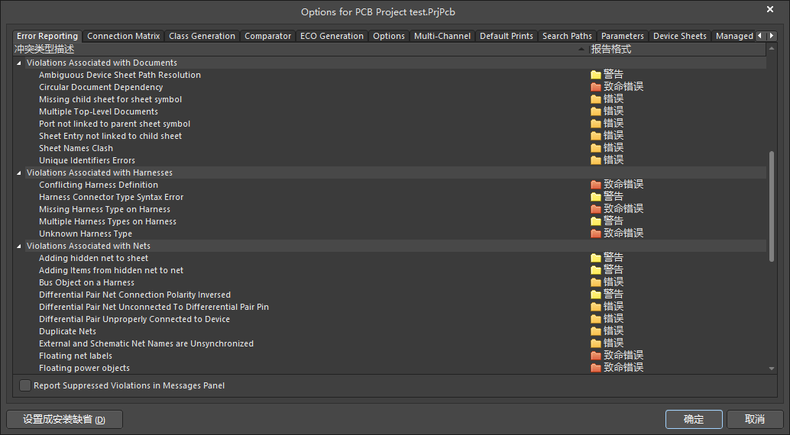
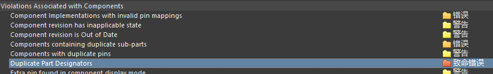

AD20软件使用
单位换算
- 1mil = 0.0254mm
- 1mm = 39.37mil
- 1oz = 0.035mm = 1.38mil（oz是重量单位，1oz = 28.35g。在PCB上，1OZ意思是1平方英尺的面积上平均铜箔的重量在 28.35g，用单位面积的重量来表示铜薄的平均厚度！）
打开AD
注意：不要直接打开AD软件，而是打开对应的工程文件（.PrjPcb文件）。直接打开AD会默认打开之前的文件，但没有对应的工程。如下图：
这种情况下也可以进行一些操作，但许多与工程相关的设置，选项等无法打开，如下面的原理图报错设置无法打开。
如果只是简单浏览，也可以直接打开AD，或者对应的文件。
原理图器件命名，标值等
原理图库中，每个元件的属性如下
Comment用于导入原理图后，标值。
建议不要从官方的原理图库中导入原理图。官方库中有许多不需要的属性，并且阻值会写在value里，导出的bom表里不会有value这一列
导入原理图后：
- Designator：标志符，可以理解为名字，同一原理图不能重复
- comment：一般写值，芯片写对应的型号
- Description：同一类型写一样的
以上主要是为了到处bom表方便
原理图报错设置
工程->工程选项（快捷键：c->o）

需要修改的：（根据b站凡亿教育）
Violations Associated with Components下的Duplicate Part Designators，重复命名问题

Violations Associated with Nets：Floating net labels
和Floating power objects，悬浮问题。Nets with only one pin，单端网络问题。
规则设置
间距规则
Electrical->Clearance：最小间距5mil
线宽规则
Routing -> Width
射频线需要仿真确定线宽，连线时可以先设置为10mil
电源线宽度为20mil或30mil，连到器件前一点的时候可以减小为10mil
过孔规则
Routing -> Routing Via Style
盘的大小 = 过孔大小 * 2 ± 2 mil
注意区分 Hole Size 和 Diameter
过孔放置时默认不会按规则来，还需要去AD设置里，AD界面右上角进入设置：PCB Editor->Defaults，右边最下边选择via，设置默认Hole
Size 和 Diameter为最常用的，其他大小可以放置后手动调大小
铺铜规则
- 正片：默认无铜，走线和铺铜意味着这些地方有铜
- 负片：默认有铜，走线和铺铜意味着这些地方无铜
plane
操作相关
注意有的快捷键受中文输入法影响
x1 + x2：按住x1，再按x2
x1 -> x2：依次按x1，x2
原理图SchDoc常用操作
栅格设置：工具->原理图优先项（t -> p）
- 捕捉栅格：光标每次移动的距离。
- 捕捉距离（电气栅格）：移动、放置元件或线时，距离小于捕捉距离会吸附。
- 可见栅格：工作区上见到的网格的大小。
切换栅格：视图->栅格（v -> g）
- 切换捕捉栅格：会同时切换3个栅格设置
- 切换捕捉栅格：显示/不显示栅格
- 切换电气栅格：只切换电气栅格（捕捉距离）设置
- 设置捕捉栅格：单独设置捕捉栅格
原理图SchDoc的栅格设置最好和原理图库SCHLIB的设置保持一致（单位和大小都一致）
- 对齐到栅格上：选择器件，
a -> g。是按捕捉栅格对齐，即光标能移动到的位置，想移动到可视栅格上，要把捕捉栅格设为和可视栅格一样。
PCB文件PcbDoc常用操作：
修改PCB板子大小：在丝印层 Mechanical 1 画线（不要用ctrl+w快捷键），例如画一个4mm x 7mm的长方形，选中4条边。
设计->板子形状->按照选择对象定义，或快捷键d->s->d原点：
e->o->s，设置原点位置。切换单层显示：
Shift + s，在三个等级间切换，我习惯在默认情况下排版，第二个等级上（按一次Shift + s）情况下连线高量网络net：按住Ctrl点击某个网络，相应的所有相同网络高亮。按住Ctrl点击其他位置，取消高亮
连线：
Ctrl + w连线时调节线宽：在连线时按
3可以在规则设置中的最小宽度、首选宽度、最大宽度切换走弧线：pcb界面中上方放置栏，右击最右边的线条模样的，选择圆弧（边沿），放置时按空格切换弧线方向
选择单个器件：不要点击到焊盘，这样会选择到焊盘。点丝印（黄色）或其他
放置过孔：放置过孔后需要双击，在右边属性栏的Net选择相应网络，否则没法相连
对齐：选择要对齐的器件，按A。常用的：左右、顶底对齐；垂直、水平分布；两个焊盘的中心对齐：水平、垂直中心对齐。
交叉选择：原理图SchDoc界面，选择：工具->交叉选择模式。分屏的时候，在原理图上选择的器件，会在pcb上高亮。
器件按矩形摆放：选择器件后按
t -> o -> l，画一个矩形，对应器件会自动排列在这个矩形中。应用：将原理图导入到PCB后，想在PCB上按不同部分分开摆放，原理图选择某部分的器件（如某个芯片及其外接的电阻容等），在PCB文件中，对应器件会高亮，想把这些器件摆放在一起，可以在选择pcb文件后（鼠标右键在pcb界面轻微移动一下即可，左键点容易把高亮消除），按快捷键 t + o + l，画一个矩形，对应器件会自动排列在这个矩形中。更改封装：如果只是在对应的封装库更改，需要选择左下角PCB Library在封装库对应封装右击，选择 'Update PCB With xx'。如果改了封装，需要在原理图：工具->封装管理器，选择新的封装库和对应封装，然后再在新的封装库右击选择'Update PCB With xx'
切换距离单位：空白处按
q，切换mil和mm测距：
Ctrl + m取消测距：消除测距的数据：
Shift + c隐藏GND地网络：地一般通过铺铜相连，并不需要连线，不需要显示出GND的连接关系。在PCB，点击：设计->类，右击Net Classes，添加类，取类名，将地网络（如GND）添加到类成员中，确定。再在AD左下角选择PCB，可以看到创建的Net Classes，右击对应的类，连接->隐藏，即可隐藏GND。其他Net也可通过类似方法隐藏
从原理图更新到PCB：修改原理图后，要更新PCB，在原理图选择：设计->update PCB Document ... 弹出的界面要取消勾选下列选项（或类似选项）

选中线：
s -> c，选中两个焊盘间的整条线。选中网络net：
s -> n，选中该网络所有的线和焊盘。（选中后，按delete只会删除线，不会删除焊盘）改变光标移动距离：
g，改变每次光标移动的间隔，距离。铺铜相关：
- 铜的Net一般是地GND，在铺铜的时候，按
Tab，修改右边Net为GND，再按Esc，继续完成铺铜。（这样可以避免铺完铜，再改Net，然后重新铺铜这样繁琐的操作）
- 铜的Net一般是地GND，在铺铜的时候，按
注意事项
- 射频线周围打孔：孔间距40~50mil